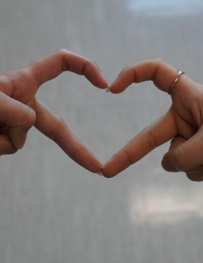
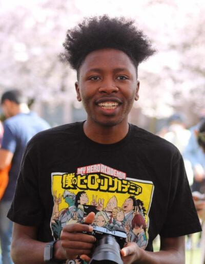
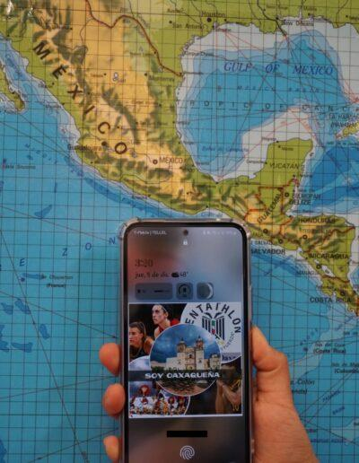
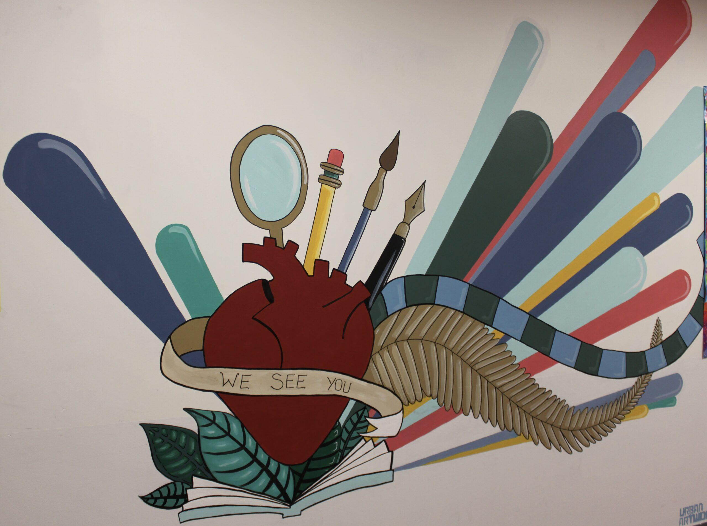
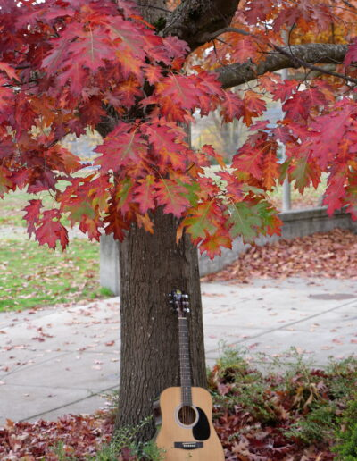
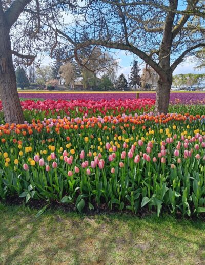

Stories & Community Impact
Behind every metric is an extraordinary individual journey. Meet the students, caregivers, and community mentors flourishing through Kandelia's programs.
Roots & Routes Stories
Click on any story card to read the full first-person narrative directly on this page.

Sunflower & Tulip's Story
"Moving to a new place on the other side of the world can feel next to impossible. But finding community made Seattle feel like home."
Sunflower (from Astana, Kazakhstan) and Tulip navigated the shock of relocating across the world, bonded at Seattle World School, and found their voices through Kandelia's welcoming community.

Patrick's Story
"Seattle is my favorite! SWS and Kandelia helped me adjust to life in America, learn English, and believe in my future."
Arriving from Kenya at 16, Patrick adjusted to Seattle's fast-paced English, embraced the rain, and flourished at Seattle World School with support from Kandelia's teachers and mentors.

Ana's Story
"Even when things are hard, you have to keep moving forward. Kandelia gave me the confidence to excel in school and pursue my dreams."
A 19-year-old student from San Pedro el Alto in Oaxaca, Mexico, Ana overcame separation from her father and language barriers to master math, chemistry, and English with Kandelia's guidance.

A Mother's Story
"Thanks to the good people I met at Kandelia, my son was able to study and we found safety, dignity, and real hope."
A courageous mother who fled life-threatening violence in El Salvador shares her journey of finding safety, school enrollment, and whole-family stability through Kandelia.

Vidia's Story
"Every challenge I faced made me stronger. Kandelia gave me the resources to conquer transit, master English, and dream big."
After years in refugee resettlement moving from Iran through Turkey, Vidia arrived in Seattle, mastered English and transit systems, and is now thriving in Running Start college courses.

Vera's Story
"The community being built here is full of kindness. Kandelia is like a family that always has your back."
Growing up on a remote island rescuing animals, Vera faced early hardships in Seattle before finding a vibrant multicultural community at Seattle World School and performing at Kandelia's fair.

Silvia's Story
"No importan las dificultades, siempre hay un nuevo comienzo. Gracias a Kandelia por abrirnos las puertas con tanto amor."
Leaving Venezuela in 2018 through Peru, Silvia reunited with her daughter in Seattle, learning English, volunteering, and finding compassionate support from Kandelia's family team.

Leslie's Story
"When I arrived I was shaking with fear. Now I know I can speak up, make friends, and succeed anywhere."
With just one week to make a life-changing decision to move to the US, Leslie overcame language anxiety at Seattle World School and built confidence in Kandelia's English conversation circles.

Merida's Story
"People here are so kind and helpful. At Kandelia, they never let you feel like you are alone."
Arriving bundled up in winter, Merida quickly warmed to Seattle's kind people, conquering college-level courses through Running Start with academic encouragement from Kandelia.
Empowering Every Journey
These authentic stories reflect the resilience and determination of our participants. Partner with Kandelia to ensure every newly arrived immigrant and refugee has the tools, education, and community to flourish.
Voices of Trust & Gratitude
What students, parents, school counselors, and community leaders say about Kandelia.
2026 Community Impact Report
Transparent outcomes from our student graduation cohorts, emergency family fund, and adult digital literacy classes.
Deep Roots, Lasting Flourish
Explore our comprehensive evaluation of student graduation rates, family economic mobility, and direct assistance distribution across King County.
- 570+ Newcomers guided through academic and civic pathways
- 95% Graduation Rate among cohort high school seniors
- $240,000+ Distributed in direct emergency family relief & rental aid
- 1,200+ Hours of bilingual adult digital literacy training delivered